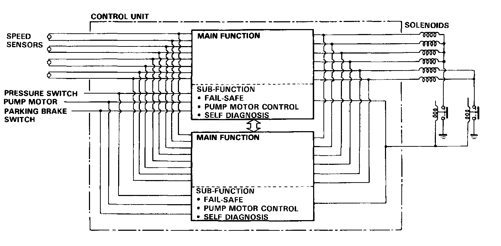

Electronic Brake Control Module: Description and Operation
Features/Construction/OperationABS Control Unit
The ABS control unit consists of a main tunction section, which controls the operation of the anti-lock brake system, and sub-function, which controls the pump motor and 'self-diagnosis
1. Main Function
The main function section of the ABS control unit performs calculations on the basis of the signals from each wheel sensor and controls the operation of the anti-lock brake system by putting into action the solenoid valves in the modulator unit for each front brake and for the two rear brakes
2. Sub-function
The sub-function section gives driving signals to the pump motor and also gives "self-diagnosis" signals, necessary for backing up the anti-lock brake system.

Self-diagnostic Function
Since the anti-lock brake system modulates the braking pressure when a wheel is about to lock, regardless of the driver's intention, the system operation and the braking power will be impaired if there is a malfunction in the system. To prevent this possibility, at speeds above 6 mph (10 km/h), the self-diagnosis function, provided in the sub-function of the ABS control unit, monitors the main system functions. When an abnormality is detected, the ABS indicator light goes on. There is also a check mode of the self-diagnosis system itself; when the ignition switch is first turned on, the ABS indicator light comes on and stays on for a few seconds after the engine starts, to signify that the self-diagnosis system is functional.
Fail-safe Function
If an abnormality is detected, the control unit turns off the fail-safe relays and motor relay. In this condition the ALB system is prevented from functioning, yet the basic brake system continues to operate normally.
The ANTI-LOCK Warning Light Comes On
1. When the fluid pressure pump runs more than 120 seconds.
2. When the parking brake is applied for more than 30 seconds while the vehicle is being driven.
3. When the rear wheel(s) is (are) locked more than a specified time.
4. When the wheel rotation signal is not transmitted due to faulty wire or sensor.
5. When the operation time of the solenoid valve(s) exceeds a predetermined valve and the control unit finds an open in the solenoid circuit.
6. When the output signals from both main functions in the control unit are not transmitted to the solenoid valve(s).